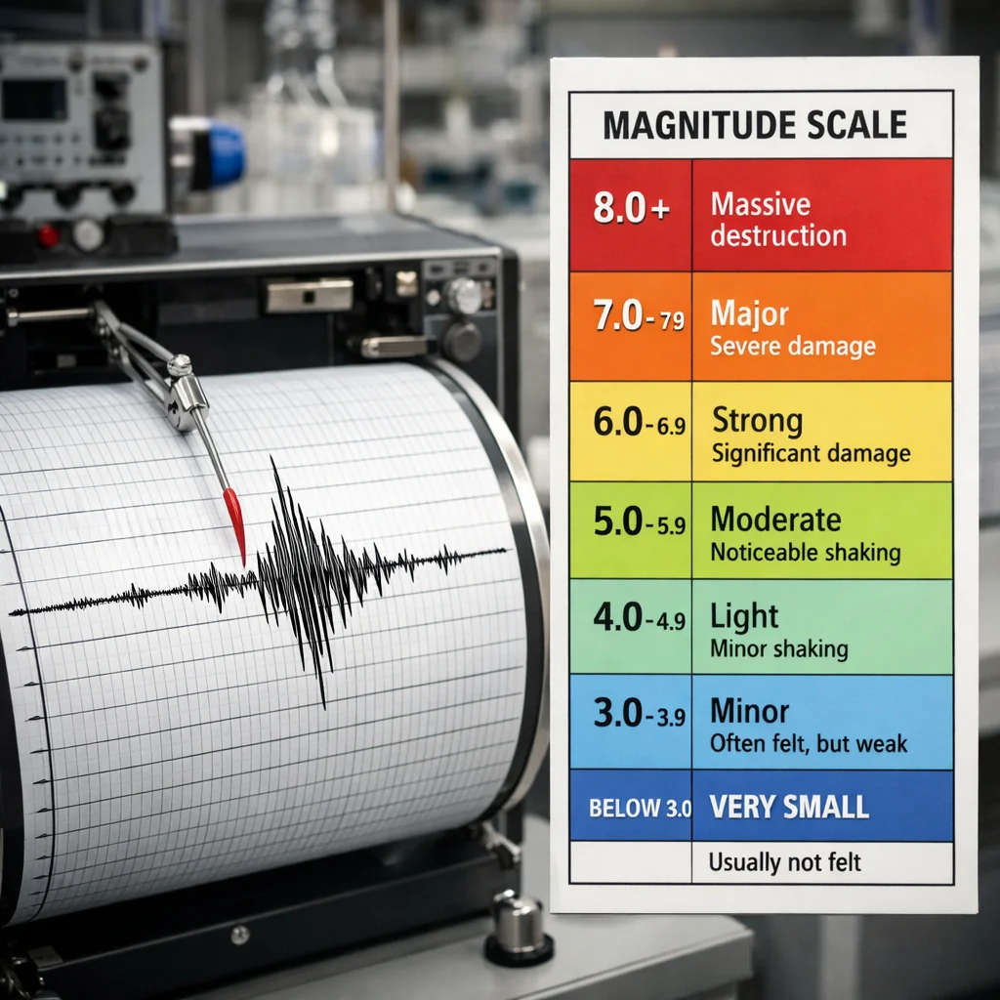

Deprem Büyüklük Ölçekleri: Richter, Moment ve MMI Farkı
Haberlerde "Mw 5.2 büyüklüğünde deprem" ifadesini duyduğunuzda bu tam olarak ne anlama geliyor? Deprem ölçekleri karmaşık görünebilir ama aslında üç temel ölçek yeterli: Richter, Moment Büyüklüğü (Mw) ve MMI (Modifiye Mercalli Şiddet).
Richter Ölçeği (ML) — Klasik
1935'te Charles Richter tarafından geliştirildi. Sismograf'taki dalga genliğini logaritmik ölçekle ölçer. Her basamak artışı 10 kat büyüklük, 32 kat enerji farkı yaratır. Yani Mw 6.0 bir deprem, Mw 5.0'dan 32 kat daha güçlüdür. Richter küçük-orta büyüklükteki yerel depremlerde kullanılır (Mw <6.5). Büyük depremleri olduğundan düşük gösterir.
Moment Büyüklüğü (Mw) — Modern Standart
1970'lerde geliştirilen Mw, depremin toplam enerjisini fay yüzey alanı × yer değiştirme × sertlik formülüyle hesaplar. Richter'in aksine büyük depremlerde doygunluk yaşamaz. 1960 Şili Mw 9.5 ve 2004 Sumatra Mw 9.1 gibi devasa depremler ancak Mw ile ölçülebilir. Günümüzde AFAD ve Kandilli artık Mw kullanır. Medyada "Richter" denmesi eski alışkanlıktır.
MMI Şiddet Ölçeği — Hasar Bazlı
MMI (Modifiye Mercalli), bir depremin belirli bir lokasyonda yarattığı hasarı ve hissi ölçer. Romen rakamı ile I-XII arasında gösterilir: I: hissedilmez, III: az hissedilir, V: herkes hisseder, VII: duvar çatlakları, IX: binalar yıkılır, X-XII: total yıkım. Aynı deprem, merkezine yakın yerde MMI IX, uzakta III hissedilebilir.
Büyüklük vs Şiddet — Fark Ne?
Bu ikisi karıştırılır. Büyüklük (Richter, Mw) depremin salınan enerjisidir — sabit bir değer. Şiddet (MMI) ise belirli bir lokasyondaki etkidir — konuma göre değişir. Mw 6.5 bir deprem, merkezde MMI VIII hasar yaratır ama 100 km uzakta MMI V hissedilir. Medya genelde ikisini karıştırır: "6 şiddetinde deprem" ifadesi teknik olarak yanlıştır, doğru ifade "Mw 6.0 büyüklüğünde"dır.
Büyüklük Ne Kadar Hasar Yaratır?
Mw <3.0: Mikro deprem, hissedilmez. Mw 3.0-3.9: Zayıf. Mw 4.0-4.9: Orta. Mw 5.0-5.9: Kuvvetli — hasarsız ama yaygın korku. Mw 6.0-6.9: Güçlü — eski binalar yıkılabilir. Mw 7.0-7.9: Büyük — önemli yıkım (1999 Gölcük Mw 7.6). Mw 8.0+: Devasa — bölgesel yıkım. Mw 9.0+: Dünya çapında tsunami (2011 Tohoku).